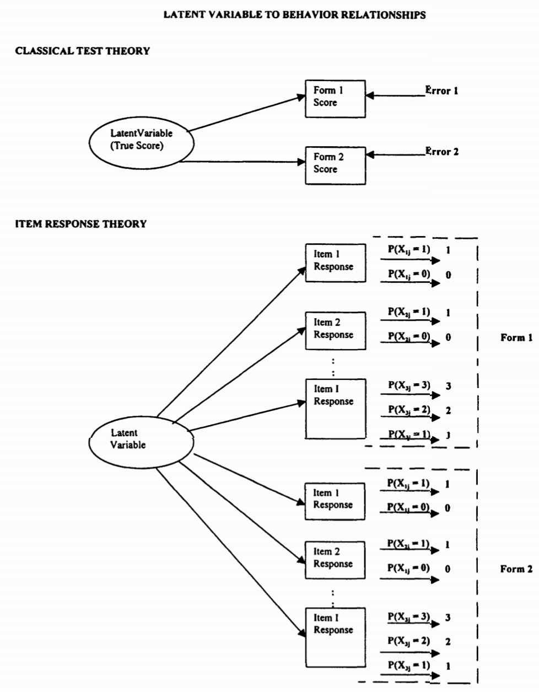
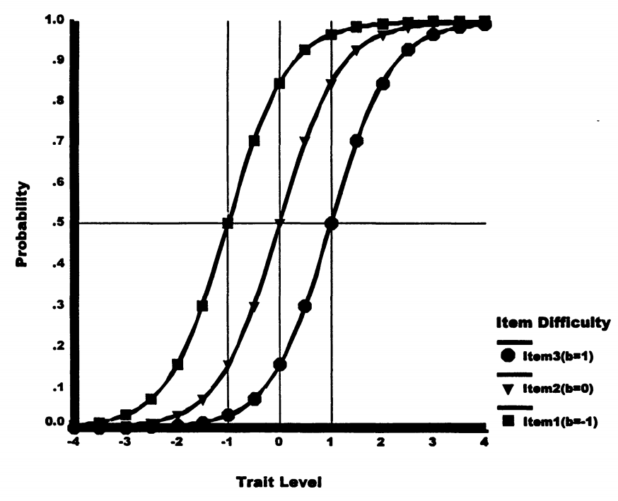
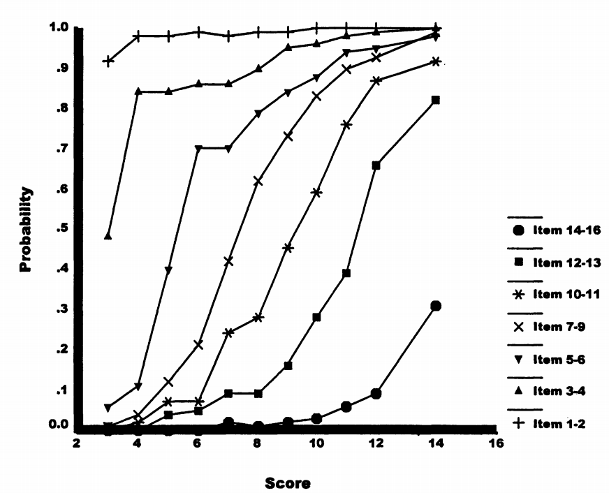
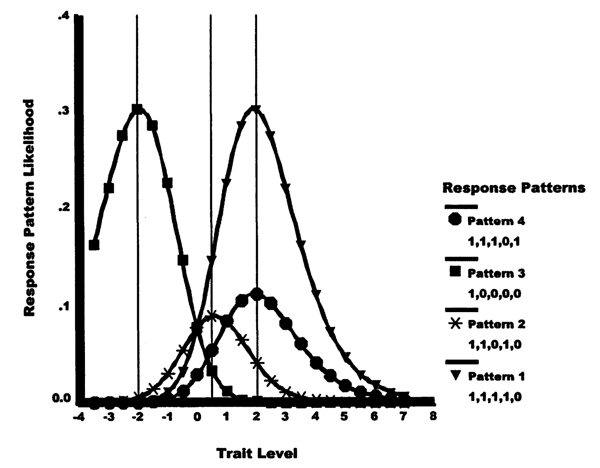
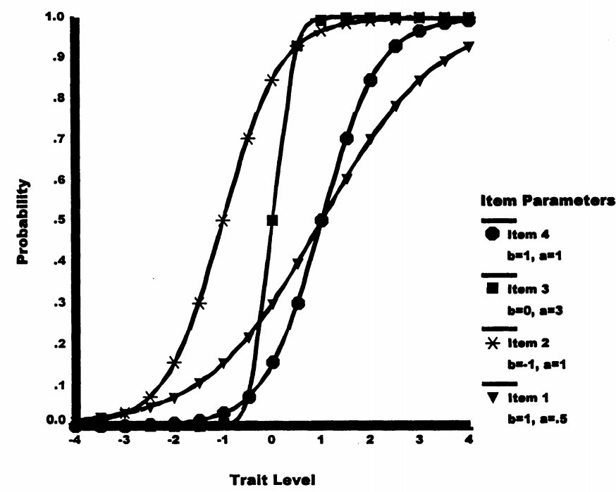
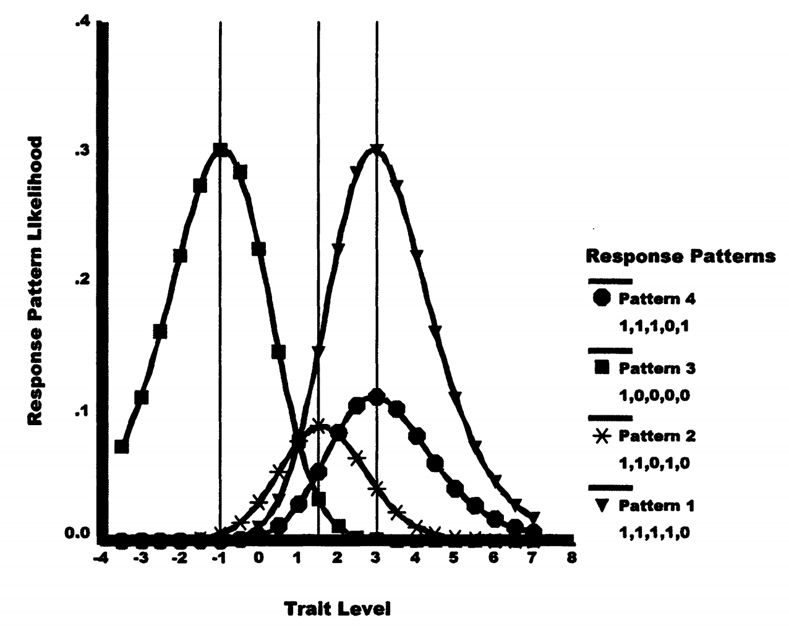

项目反应理论：基于模型的测量¶
0. 为什么需要更好的测量方法？¶
思考题
假设你是一位老师，有两个学生：
- 小明在一份简单试卷上得了80分
- 小红在一份困难试卷上得了70分
问题：谁的能力更强？
这个看似简单的问题，恰恰揭示了传统测试理论（CTT）的根本缺陷。今天，我们将学习项目反应理论（IRT）如何解决这个问题。
1. 理解测量的本质¶
1.1 潜变量问题¶
核心概念
潜变量（Latent Variables）：不可直接观察但影响可观察行为的心理特质
显变量（Manifest Variables）：可以直接观察和记录的行为表现
让我们用医学诊断来类比：
| 类比对象 | 可见信息 | 推断目标 |
|---|---|---|
| 医学诊断 | 发烧 38.5°C、咳嗽、乏力 | 可能是流感 |
| 心理测量 | 答对第 1 题、答错第 5 题、总分 75 分 | 能力水平是多少？ |
关键差异
医生有体温计可以精确测量发烧程度，但心理学家如何"测量"看不见的能力？ 这就是为什么我们需要测量模型！
1.2 两种测量模型的对比¶

经典测试理论（CTT）：
- 关注总分
- 模型：观察分数 = 真分数 + 误差
- 简单但有局限
项目反应理论（IRT）：
- 关注每个项目的反应
- 模型：P(答对) = f(能力, 项目参数)
- 复杂但更精确
2. CTT的三大致命缺陷¶
CTT的根本问题
- 测试依赖性：换一套题，分数含义就变了
- 信息浪费：只用总分，忽略答题模式
- 无法分离参数：不知道高分是因为能力强还是题目简单
2.1 案例分析：为什么CTT不够用？¶
考虑以下情况：
| 学生 | 答题模式 | 总分 | CTT结论 |
|---|---|---|---|
| A | 答对题1-4（简单题） | 4分 | 能力相同 |
| B | 答对题2-5（包含难题） | 4分 | 能力相同 |
真的相同吗？
如果题5比题1难很多，学生B答对题5是否说明他能力更强？ CTT无法回答这个问题！
3. IRT的革命性突破¶
3.1 Rasch模型：最简单的IRT模型¶
Rasch模型的核心思想
答对概率取决于：
- 能力（θ）：个人的潜在特质水平
- 难度（β）：项目的难度参数
当能力 = 难度时，答对概率 = 50%
3.1.1 形式化表达¶
对数几率形式（直观理解）：
概率形式（实际计算）：
记忆技巧
- θ > β：能力超过难度 → 答对概率 > 50%
- θ = β：能力匹配难度 → 答对概率 = 50%
- θ < β：难度超过能力 → 答对概率 < 50%
3.2 项目特征曲线（ICC）¶

ICC的关键特征
- S形曲线：中间陡峭，两端平缓
- 位置参数：曲线左右移动表示难度不同
- 平行曲线：Rasch模型中所有ICC平行（相同斜率）
3.3 真实数据示例¶
让我们看看Rasch最初研究的数据：

数据特征
- 概率随总分单调递增
- 呈现S形增长模式
- 项目曲线不相交（保持难度顺序）
4. 能力估计的革命性方法¶
4.1 从求和到搜索¶
根本性转变
CTT 方法： 依赖总分 总分 = \(\sum\) 项目得分 能力估计 = 标准化后的总分
IRT 方法： 基于概率的最大似然估计
对每个可能的 \(\theta\)：
- 计算 \(L(\text{观察到的答题模式} \mid \theta)\)
- 选择使 \(L\) 最大的 \(\theta\) 作为能力估计
4.2 具体计算示例¶
假设5道题，难度为 (-2, -1, 0, 1, 2)，某学生答题模式为 (1,1,1,1,0)：
似然计算过程
步骤1：选择一个候选 θ 值（比如 θ = 0）
步骤2：计算每题的答对概率：
| 题目 | 难度 β | 实际答题 | \(P(\text{答对}\mid \theta=0)\) |
|---|---|---|---|
| 1 | -2 | 答对 | 0.88 |
| 2 | -1 | 答对 | 0.73 |
| 3 | 0 | 答对 | 0.50 |
| 4 | 1 | 答对 | 0.27 |
| 5 | 2 | 答错 | 0.12 |
步骤3：计算似然 L = 0.88 × 0.73 × 0.50 × 0.27 × (1 - 0.12) = 0.076
步骤4：尝试其他 θ 值，找到使 L 最大的 θ
4.3 搜索过程可视化¶

关键发现
- 不同答题模式的似然曲线形状不同
- 峰值位置就是最佳能力估计
- 不一致的答题模式（如先答对难题再答错易题）似然较低
5. 2PL模型 - 加入区分度¶
5.1 为什么需要区分度参数？¶
思考
所有题目都同样有效吗？
- 有些题目能很好地区分不同能力的学生
- 有些题目区分效果较差
5.2 2PL模型公式¶
其中：
- α = 区分度参数（斜率）
- α越大，曲线越陡峭，区分效果越好

重要区别
在 2PL 模型 中，总分不再是充分统计量！
相同总分的两个学生，如果：
- 学生 A：主要答对了低区分度的题目
- 学生 B：主要答对了高区分度的题目
那么：→ 学生 B 将获得更高的能力估计
原因解释：
在 2PL 中，每道题的区分度参数（α）影响答题的“信息量”。 高区分度题对能力估计贡献更大，因此 → 相同总分但解题模式不同的学生，其能力估计不相同。
换句话说： 总分无法捕捉“答对的是哪些题”，因此 不是充分统计量。
6. IRT的实际应用¶
6.1 测试等值问题¶
IRT的解决方案
通过包含项目参数，IRT自动调整不同测试难度的影响

在困难测试上答对4题 → 更高的能力估计
在容易测试上答对4题 → 较低的能力估计
能力估计的可信度
- 横轴 θ：哪个 θ 让模型预测的反应模式概率最大 → 就是该学生的能力估计
- 纵轴 L(θ)：最大似然值的高度表示该反应模式的“合理性”或“内部一致性”
示例比较：
- Pattern 1 (1,1,1,1,0)：在容易题上答对 4 题，θ ≈ 1，似然值较高 → 稳定估计
- Pattern 4 (1,1,1,0,1)：在更难题上答对 4 题，θ ≈ 2.5，似然值也较高 → 能力更强
- Pattern 2 (1,1,0,1,0)：对错交替、答题不一致，似然值整体偏低 → 能力估计不稳定、不可信
6.2 适应性测试（CAT）¶
IRT使CAT成为可能
- 根据当前能力估计选择最合适难度的题目
- 实时更新能力估计
- 达到精度要求即可停止测试
结果：更短的测试，更准确的测量！
7. 总结：IRT vs CTT¶
IRT的革命性贡献
| 特征 | CTT | IRT |
|---|---|---|
| 测量不变性 | ❌ 依赖特定测试 | ✅ 跨测试稳定 |
| 信息利用 | ❌ 只用总分 | ✅ 利用答题模式 |
| 参数分离 | ❌ 混在一起 | ✅ 能力与项目独立 |
| 测量精度 | ❌ 假设恒定 | ✅ 随能力变化 |
| 适应性测试 | ❌ 不支持 | ✅ 天然支持 |
核心理念
CTT问："你得了多少分？"
IRT问："基于你的答题模式和题目特性，什么能力水平最可能产生这个结果？"
这就是从"计分"到"测量"的本质飞跃！
8. 思考与练习¶
课后思考
- 为什么说IRT是"基于模型"的测量？
- 在什么情况下，两个总分相同的学生会得到不同的能力估计？
- 如果你要设计一个适应性测试系统，IRT如何帮助你？
深入学习建议
- 尝试手动计算一个简单的似然函数
- 思考不同学科测试的项目特征曲线可能是什么样的
- 了解现代大型考试（如GRE、托福）如何应用IRT
本章内容基于 Embretson & Reise (2000) 第三章整理